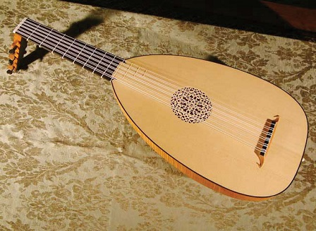

Home Guitar Lute Cello Piano Training

Lutes are stringed musical instruments that include a body and "a neck which serves both has a handle and as a means of stretching the strings beyond the body"
The lute family includes not only short-necked plucked lutes such as the lute, oud, pipa, guitar, citole, gittern, mandore, rubab, and gambus and long-necked plucked lutes such as banjo, tanbura, bağlama, bouzouki, veena, theorbo, archlute, pandura, sitar, Tanbur, setar, but also bowed instruments such as the Yaylı tambur,rebab, erhu, and entire family of viols and violins
Lutes apparently rose in ancient Mesopotamia prior to 3100 B.C. or were brought to the area by ancient Semitic tribes. The lutes were pierced lutes, long-necked lutes with a neck made from a stick that went into a carved or turtle-shell bowl, the top covered with skin, and strings tied to the neck and instrument's bottom.